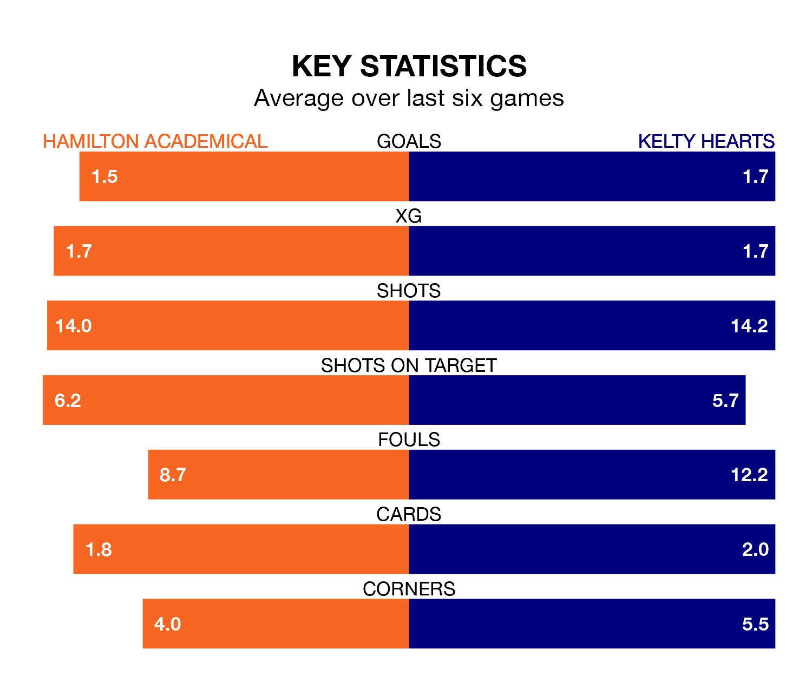

Kelty Hearts travel to Hamilton Academical on Saturday in League One.
The visitors come into the game on the back of a defeat in their last match, having lost to Montrose 2-0 at home.
The Accies, meanwhile, won their last match, 1-0 against Alloa Athletic, with their goal scored by Kevin O'Hara.
With 69 goals in 35 games so far this season, Hamilton Academical are the league's second-highest scorers with 2.0 goals per game. And they are conceding fewer than average, letting in 27 goals at a rate of 0.8 per game.
Kelty Hearts, meanwhile, are below average scorers, with 1.3 goals per game, compared to a league average of 1.6. They have conceded 1.7 goals per game.
The Accies are second in the table after 35 games, of which they have won 21 and drawn eight, earning 71 points.
The visitors are four places behind the home side in sixth, with 12 wins and eight draws putting them on 44 points.
In O'Hara, Hamilton Academical have one of the league's sharpest shooters so far this season. He has notched 14 goals in 33 appearances, to sit third in the scoring charts.
His goal rate of one every 182 minutes is quicker than that of Alfie Bavidge, Kelty Hearts's top scorer with a goal every 231 minutes, and a total of nine goals in 24 games.
Hamilton Academical are in good form in League One, with four wins and a draw from their last six games.
With three wins and a draw over that period, Kelty Hearts's form is worse – they have taken 10 points from 18, compared to the Accies's 13.
In the last five years, Hamilton Academical and Kelty Hearts have played each other on four occasions. Hamilton Academical won two of them, Kelty Hearts one, and they drew once.
On average, the Accies scored 2.0 goals and Kelty Hearts 0.8 in those matches.
Their last meeting was on March 2, when Hamilton Academical won 5-0 away.
Updated: 10:44 (UTC), 30/04/24